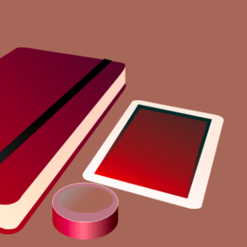
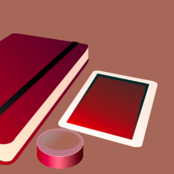
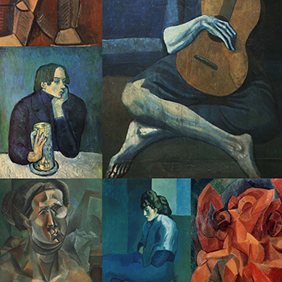
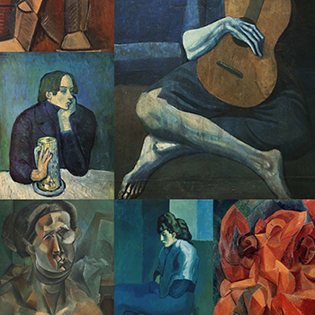
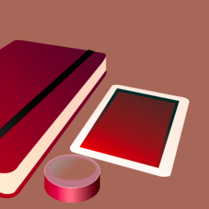
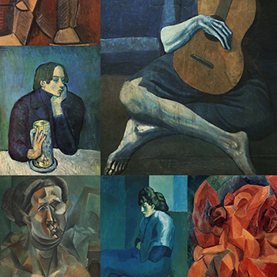
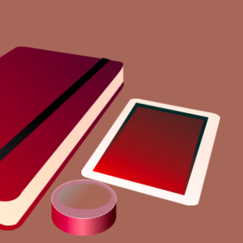
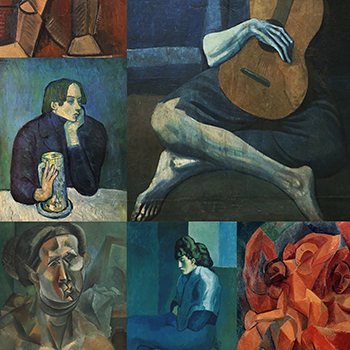

Works


 



 

 




A Senior at UC Davis with a BA in Design (soon)
My aspirations in UI/UX design comes from my work experience in problem solving technical issues. I believe that documenting process and intention in design is extremely important when it comes to solving problems. There's always a reason for implementing, and sit's not just random! I love to explore the complexity of problems, and how improvement for good user experience can also be coupled with good design.
My interests also extend into the disciplines of visual communication, interactive design, mobile app design, and motion design. In my free time, I like to code side projects, play video games, and sew!